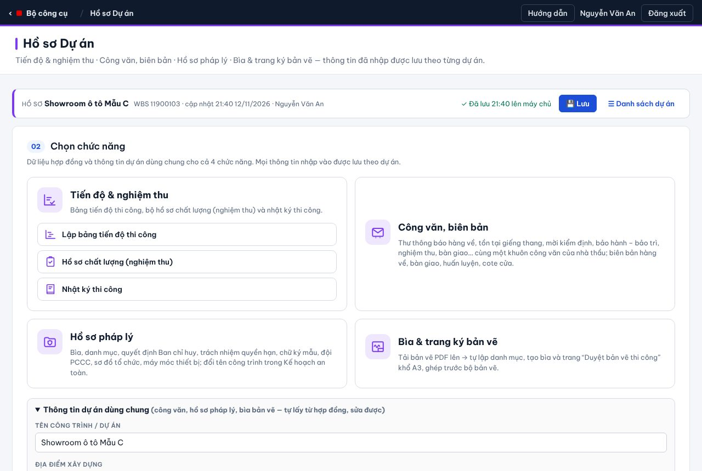
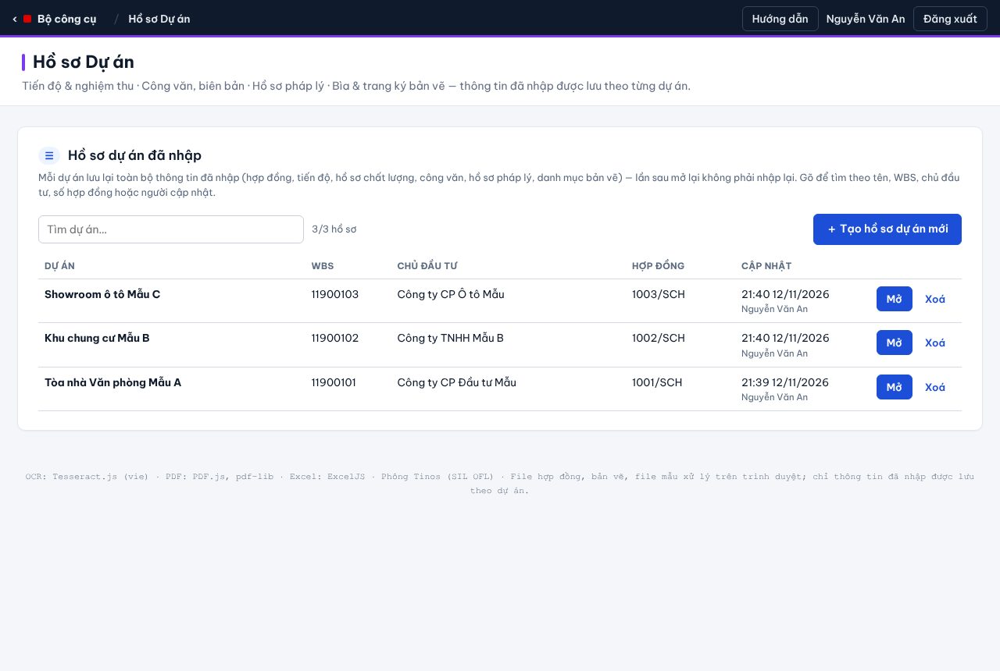
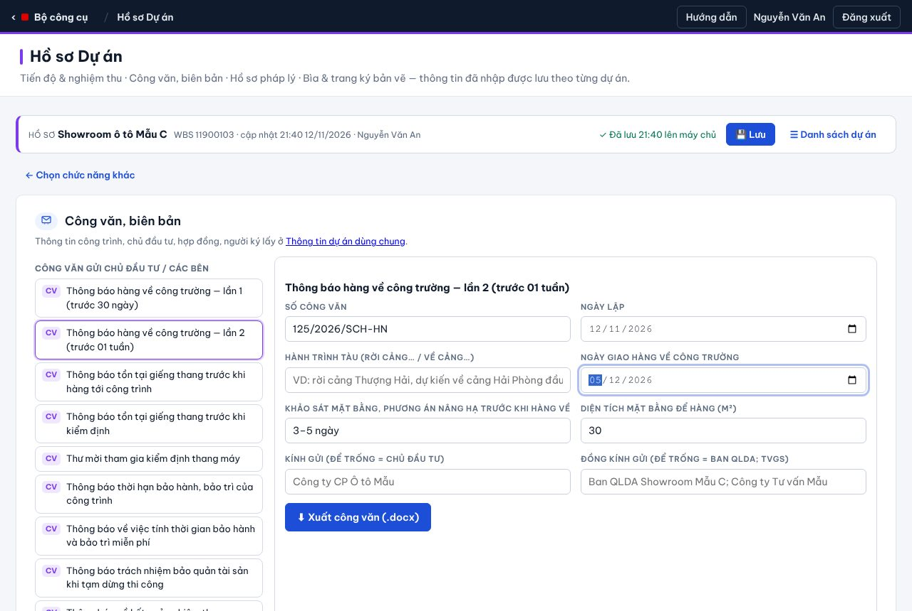
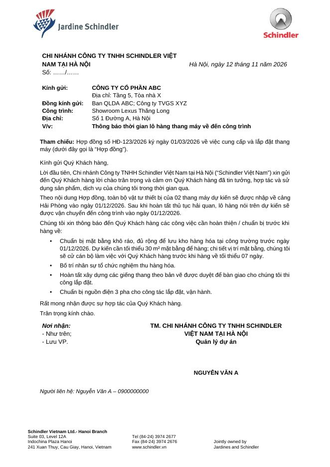
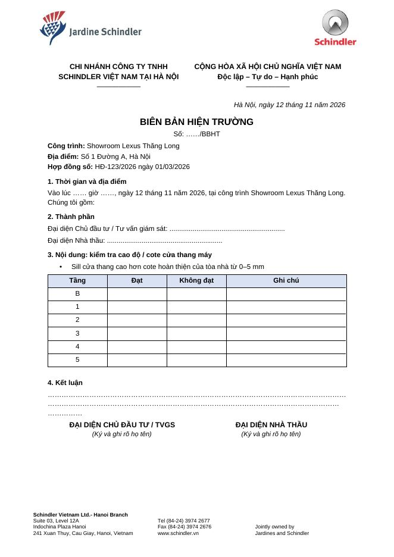
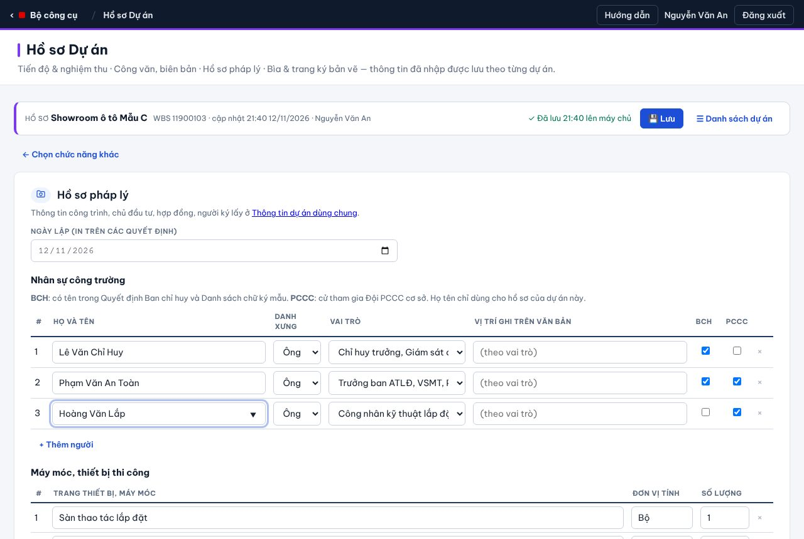
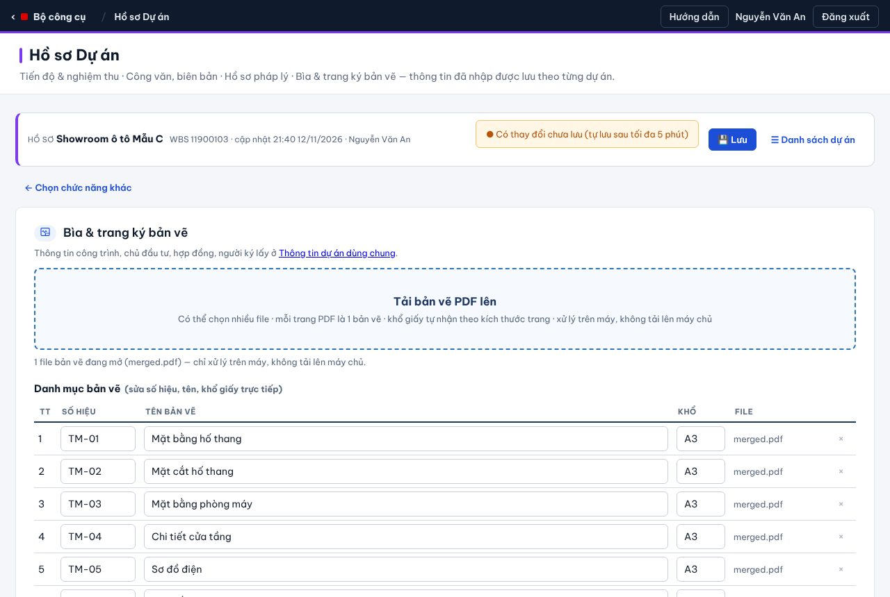
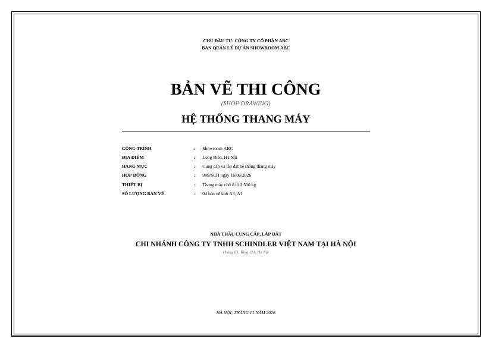
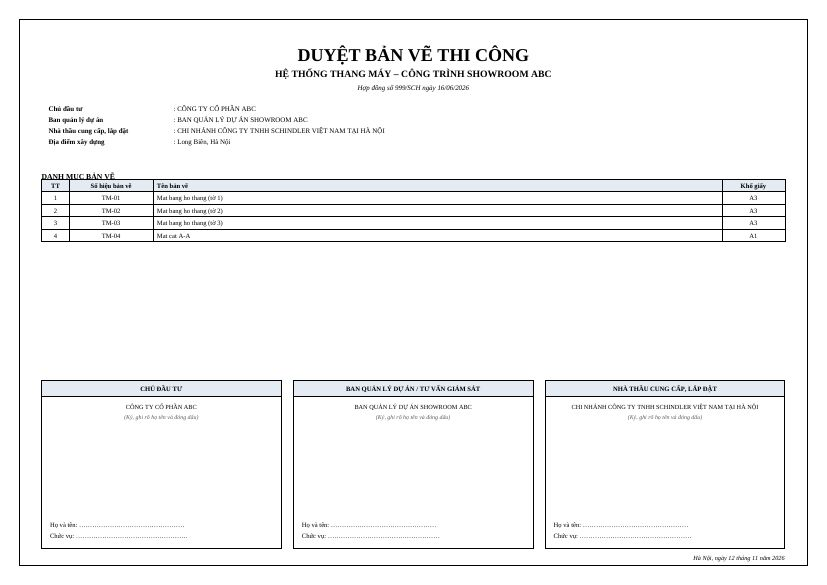

14 chức năng
Tiến độ & nghiệm thuBảng tiến độ · hồ sơ chất lượng · nhật ký
Công văn, biên bản14 văn bản, cùng 1 khuôn
Hồ sơ pháp lý8 văn bản Word, 1 file .zip
Bìa & trang ký bản vẽPDF A3, ghép trước bản vẽ
Tạo / mở hồ sơ→Chọn chức năng→Điền vài ô→Xuất file

2Tạo & mở hồ sơ

- Trang chủ → Hồ sơ Dự án → bảng các dự án đã nhập.
- Gõ vào ô Tìm dự án (tên, WBS, chủ đầu tư, số HĐ) → bấm Mở.
- Dự án mới: ＋ Tạo hồ sơ dự án mới → kéo thả hợp đồng (PDF/ảnh) hoặc Bỏ qua — nhập tay.
- Mở mục Thông tin dự án dùng chung (cuối màn hình chọn chức năng) → kiểm tra chủ đầu tư, số HĐ, người ký.
Mỗi WBS 1 hồ sơ. Tạo trùng → app mời mở hồ sơ cũ.
| Ai | Được làm gì |
|---|---|
| Admin · Quản lý dự án · Admin dự án | Xem và sửa mọi hồ sơ. |
| Site Sup | Sửa hồ sơ mình tạo; hồ sơ người khác chỉ xem (vẫn xuất được tài liệu). Muốn sửa → Admin bấm Quyền sửa để cấp. |
| Xoá hồ sơ | Người tạo hoặc Admin. Dòng nháp trên máy bỏ được bằng Xoá nháp. |
3Lưu
- 💾 Lưu bất kỳ lúc nào · app tự lưu 5 phút và sau mỗi lần xuất file.
- Mất mạng: dữ liệu vẫn giữ nháp trên máy, mở lại app sẽ hỏi khôi phục.
- File hợp đồng, bản vẽ, file Word mẫu không tải lên máy chủ.
Tiến độ & nghiệm thu
- Lập bảng tiến độ — Gantt theo tuần → Excel / PDF A3.
- Hồ sơ chất lượng — điền mục A → E → xuất trọn bộ nghiệm thu (Word).
- Nhật ký thi công — điền thông tin + số trang → xuất (ngày điền sẵn).
Cách làm giống công cụ cũ. Chi tiết hồ sơ chất lượng: hướng dẫn chung 3.4.
Công văn, biên bản

- Chọn văn bản ở cột trái (CV công văn, BB biên bản).
- Điền số, ngày và vài ô riêng — Kính gửi, hợp đồng… tự lấy từ hồ sơ.
- ⬇ Xuất (.docx) → mở Word, in, ký, đóng dấu.
| Thời điểm | Văn bản |
|---|---|
| Trước khi hàng về | Hàng về lần 1 (trước 30 ngày) · lần 2 (trước 1 tuần) · Tồn tại giếng thang · BB hàng về |
| Kiểm định, nghiệm thu | Tồn tại trước kiểm định · Thư mời kiểm định · BB cote cửa tầng · Kết quả nghiệm thu |
| Bàn giao, bảo hành | Bàn giao thang (thư + BB song ngữ) · Huấn luyện & chìa khoá · Thời hạn bảo hành · Tính thời gian bảo hành · Bảo quản khi tạm dừng |


Hồ sơ pháp lý

- Nhập nhân sự: họ tên, vai trò, tick BCH (Ban chỉ huy) / PCCC.
- Kiểm tra máy móc (có sẵn 13 thiết bị, sửa được).
- ⬇ Xuất bộ hồ sơ pháp lý → file .zip gồm 8 văn bản: bìa, danh mục, QĐ Ban chỉ huy, trách nhiệm, chữ ký mẫu, đội PCCC, sơ đồ tổ chức, máy móc.
Kế hoạch an toàn: nhập tên công trình cũ + mới → tải file Word cũ lên → app tự đổi tên (chỉ nhận .docx).
Bìa & trang ký bản vẽ

- Tải bản vẽ PDF lên — mỗi trang là 1 bản vẽ, khổ giấy tự nhận.
- Sửa số hiệu, tên bản vẽ trong bảng; kiểm tra 3 cột ký.
- ⬇ Bìa + trang ký (PDF A3) hoặc ⬇ Bộ bản vẽ đã ghép.


?Hỏi nhanh
| Không lưu được hồ sơ? | Cần có Tên công trình trong Thông tin dùng chung. |
| Báo “Chưa lưu được”? | Dữ liệu vẫn giữ nháp trên máy — có mạng bấm 💾 Lưu lại. |
| Ô để trống? | Văn bản in “……” để điền tay. |
| Hồ sơ hiện “chỉ xem”? | Hồ sơ của người khác — nhờ Admin cấp quyền sửa. |
| Muốn tập thử? | Trang chủ → 🧪 Chạy thử (Demo), vai Quản lý dự án. |